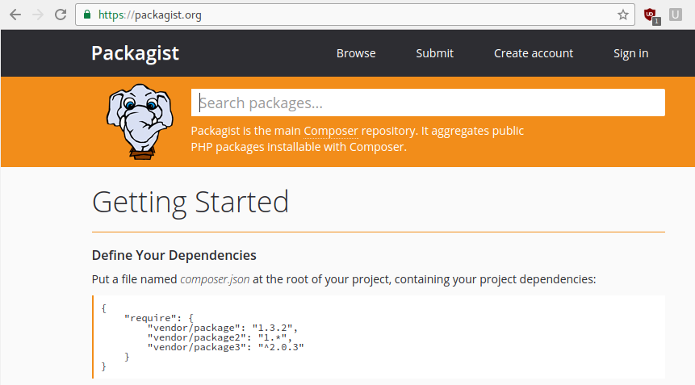
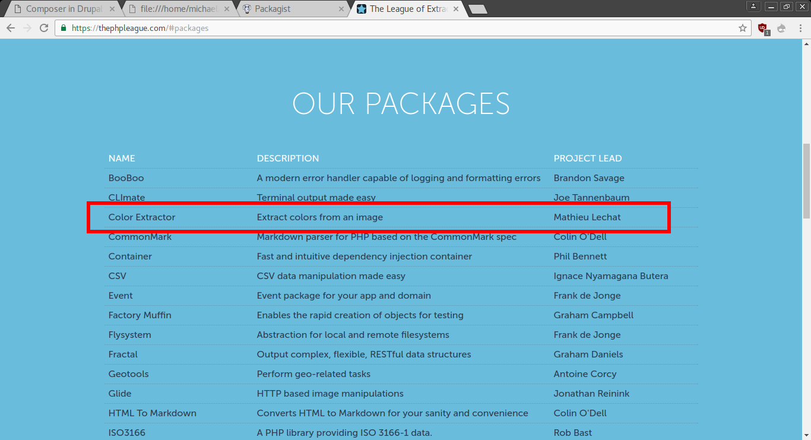
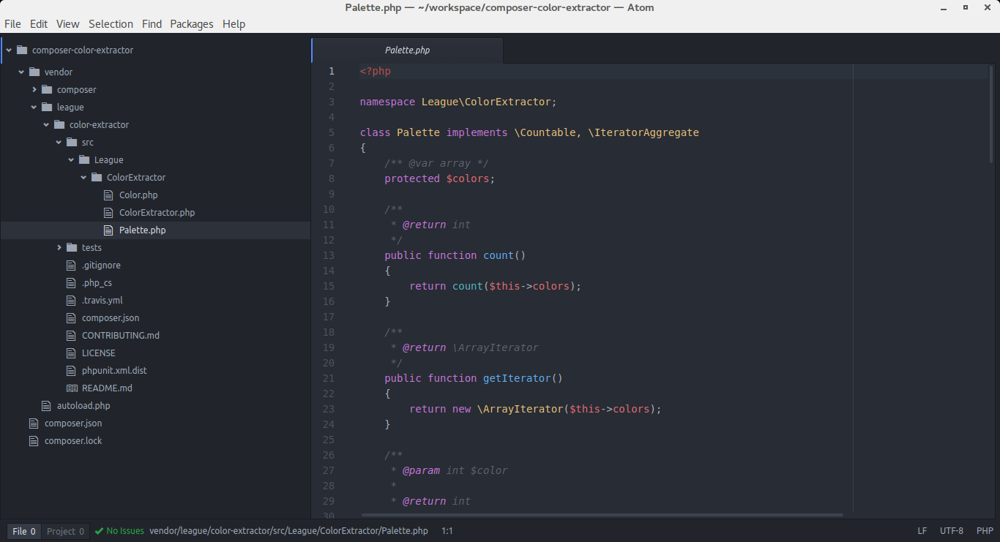

Composer in Drupal 8 Modules
Join the PHP community
Michael Lenahan
michaellenahan on drupal.org and github
@mcaleaa on twitter
These slides were created using reveal.js

Family
Use Composer in your own modules
Jordi Boggiano, December 2011
Composer was created by Nils Adermann and Jordi Boggiano

What is composer?
It's a command-line tool
What is composer?
Composer is the command-line utility with which you install packages
composer require "drupal/devel"
drush dl devel
What is packagist?
Packagist is the *default* package repository
What is packagist?
Packagist is the *default* package repository
"kinda like" = "kind of like"
Composer is "kinda like" drush
Packagist is "kinda like" drupal.org
Composer Packages are "kinda like" drupal modules or themes
Drupal Specific
Drupal-specific code means we don't share with other frameworks
Jordi Boggiano, December 2011
Composer was created by Nils Adermann and Jordi Boggiano
Exploring packagist
... and how to find good packages
thephpleague.com
thephpleague.com

thephpleague.com
this is plain php ...
this is *not* drupal ...
because we are on a drupal holiday
Color extractor example

color-extractor on github
three steps to php heaven
Get the package
composer require vendorname/packagename
Get the example code on github put it in index.php
php -S localhost:8000
Play around with it and have fun
https://github.com/michaellenahan/composer-color-extractor

Color extractor in PHP
Go into any directory you want and run this command:
composer require "league/color-extractor"
Color extractor in PHP
So, what have you got now, in the root of your project?
composer.json file
composer.lock file
vendor directory
Color extractor in PHP
composer.json file
smile and take a moment to admire the beautiful simplicity of what you just witnessed
Color extractor in PHP
You did this
composer require "league/color-extractor"
You got this
composer.lock file
Your vendor directory has the code
https://github.com/michaellenahan/composer-color-extractor
So, what about Drupal?
github.com/drupal-composer/drupal-project
Drupal composer template
composer create-project drupal-composer/drupal-project:8.x-dev YOUR-DIRECTORY-NAME --stability dev --no-interactionColor extractor in Drupal 8
Install Drupal 8 using the composer templatecomposer require "league/color-extractor:^0.3"

Color extractor in Drupal 8
Your drupalroot/vendor directory has the codeColor extractor in Drupal 8
... and here are the classes you will use in your custom module
Create the custom module
... using drupal console
drupal generate:module
We'll use the D8 color_field module to store the colors

We'll use the D8 color_field module to store the colors
We'll use the D8 color_field module to store the colors
Download the color_field module
... using composer require ...
composer require drupal/color_field "2.x-dev"

Create a node with an image
Create a node with an image
When we save the node we expect the color fields to be populated ... because of the form submit callback in the code
Here's the code
https://github.com/michaellenahan/d8-color-extractor-exampleHere's the code
Here's the code
Next steps
Make this code generic and contibute it on drupal.org
Want to help?
Get in touch!
michaellenahan on drupal.org and github
@mcaleaa on twitter